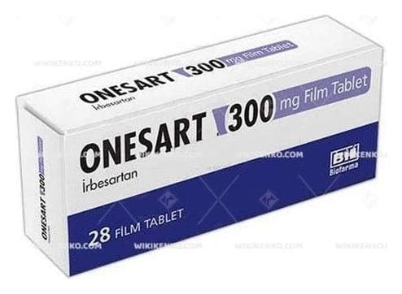

Onesart 300 mg Film Tablet, 90 Adet

Ne için kullanılır
KT · Bölüm 1ONESART 300 mg irbesartan etkin maddesini içerir. Anjiyotensin II reseptör antagonistleri olarak bilinen bir tansiyon düşürücü ilaç grubuna dahildir. Anjiyotensin-II vücutta üretilen bir maddedir. Kan damarlarında bulunan reseptörlere bağlanarak kan damarlarının daralmasına yol açar. Kan damarları daralınca içinde dolaşmakta olan kanın basıncı artar. ONESART, anjiyotensin-II adlı bu maddenin reseptörlere bağlanmasını engeller. Bu şekilde kan Bu ilacı kullanmaya başlamadan önce bu KULLANMA TALİMATINI dikkatlice okuyunuz, çünkü sizin için önemli bilgiler içermektedir. • Bu kullanma talimatını saklayınız. Daha sonra tekrar okumaya ihtiyaç duyabilirsiniz. • Eğer ilave sorularınız olursa lütfen doktorunuza veya eczacınıza danışınız. • Bu ilaç kişisel olarak sizin için reçete edilmiştir, başkalarına vermeyiniz. • Bu ilacın kullanımı sırasında, doktora veya hastaneye gittiğinizde doktorunuza bu ilacı kullandığınızı söyleyiniz. • Bu talimatta yazılanlara aynen uyunuz. İlaç hakkında size önerilen dozun dışında yüksek veya düşük doz kullanmayınız.
damarlarını gevşetir ve kan basıncını düşürür. ONESART, yüksek tansiyon ve tip 2 diyabet (şeker) hastalarında, böbrek fonksiyonlarındaki azalmayı yavaşlatır. 28 ve 90 film tablet içeren blister ambalajlarda kullanıma sunulmaktadır. Piyasada ayrıca ONESART 150 mg film tablet formu da mevcuttur. Doktorunuz size ONESART’ı aşağıdaki nedenlerden biri veya birkaçı dolayısıyla reçetelemiş olabilir: Yüksek kan basıncı tedavisinde (esansiyel hipertansiyon) Yüksek kan basıncı, tip 2 diyabet (şeker) ve böbrek fonksiyonu bozulmuş olan hastalarda böbreklerin korunmasında